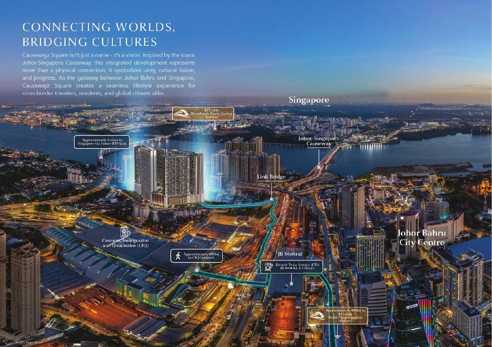
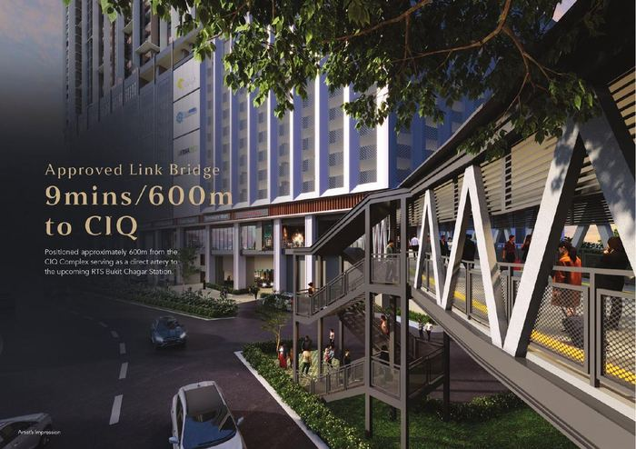
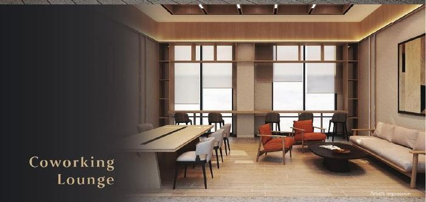
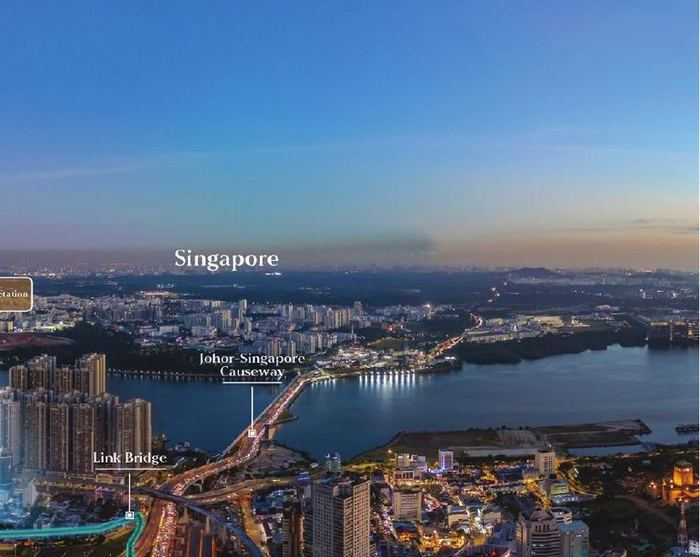
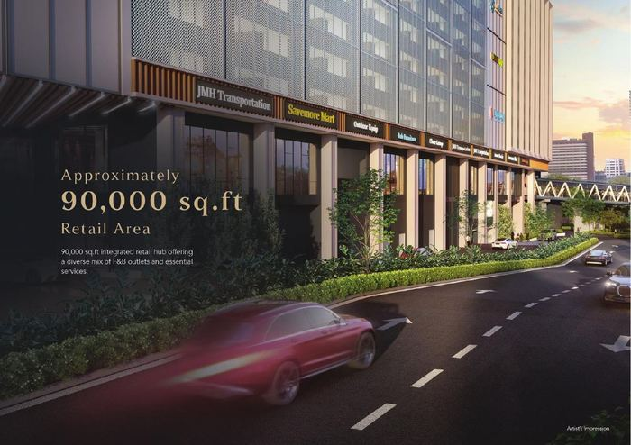

Backed by a bilateral Special Economic Zone, a 5-minute rail link to Singapore, and record-breaking investments — Johor Bahru is no longer "the next big thing". It's happening now.
Johor Bahru sits beside one of the wealthiest cities on earth. Malaysians earning in Singapore dollars spend and invest in ringgit, and Singaporeans priced out of their own market look north — where comparable properties cost a fraction of Singapore prices.
people cross the Causeway daily. This isn't speculation about future demand — the demand crosses the border every single morning.
The currency advantage makes JB property and living costs highly attractive for cross-border workers and their families.
Prime JB city-centre units transact far below equivalent Singapore psf prices, with room to grow as connectivity improves.
Cross-border commuters, SEZ knowledge workers and relocating businesses form a deep, recurring tenant pool.
Signed on 7 January 2025, the JS-SEZ spans nine flagship zones and ~3,500 km² — and it's already delivering. In the first nine months of 2025, Johor became Malaysia's No.1 investment destination with RM91.1 billion approved — 74.6% of it (RM68 billion) inside the JS-SEZ. The single largest investor? Singapore, at RM28.5 billion.
For qualifying high-value activities, up to 15 years (vs the standard 24%)
Flat rate for eligible knowledge workers for 10 years (vs up to 30%)
On qualifying capital expenditure for new investments
IMFC-J centre operational since Feb 2025 for permits & approvals
The RTS Link opens end-December 2026 — trains every 3.6 minutes at peak, up to 10,000 passengers per hour each way, a projected 40,000 daily riders. History is consistent: when a rail link of this scale opens, the market around it re-rates. The window before opening day is the window.
Watch the latest RTS Link progress — the border is changing in real time.
5 minutes to Woodlands North, opening Dec 2026
Passport-free crossing live at both land checkpoints since Sep 2025
Gemas–JB electrified double-track running since Dec 2025; KL in ~4.5 hrs
Senai International Airport and PTP, one of the region's busiest ports
Singapore's data centre capacity is constrained. Johor — with abundant land, power and the JS-SEZ framework — has become the natural spillover, growing into Southeast Asia's largest data centre market. Microsoft Azure, Equinix, Princeton Digital Group and other global operators have committed to the state.
For property investors this matters beyond headlines: the digital economy brings high-income engineers and knowledge workers — precisely the tenants and buyers who sustain a healthy market.
Southeast Asia's largest data centre market
Global operators committed in Johor
Premium graduate starting salaries in SEZ sectors (JTDC)
Every investment narrative must end with a tenant or a buyer. JB's demand base is layered:

300K+ daily crossings; every RTS-adjacent home is a commute upgrade

New jobs in AI, finance and advanced manufacturing in flagship zones

Own-stay, retirement and investment demand driven by the price gap

Population, healthcare, education and retail all expanding
A city's future is visible in its construction cranes. Slide through the projects redefining Johor Bahru →
Exploring opportunities near these landmarks? View Our Projects →
Infrastructure re-rates property markets — but the biggest moves happen before opening day, not after. With the RTS Link months from operation, JS-SEZ incentives running until 2034, and institutional money already committed, the question isn't whether JB transforms. It's whether you're positioned when it does.
A booming market needs more Dreammakerz. If you'd rather build a career on this growth than just watch it — we're recruiting.
Join the Team →Information current as of July 2026 and provided for general reference only; policies, thresholds and tax rates are subject to change. Please verify specifics with our advisors before making decisions.